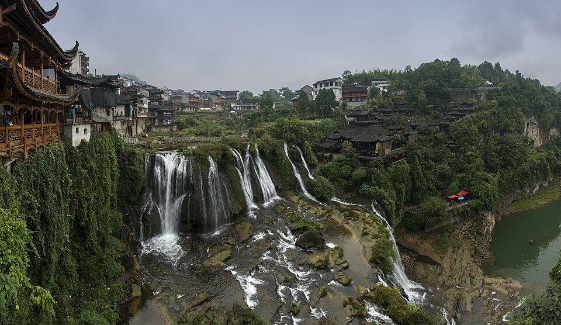
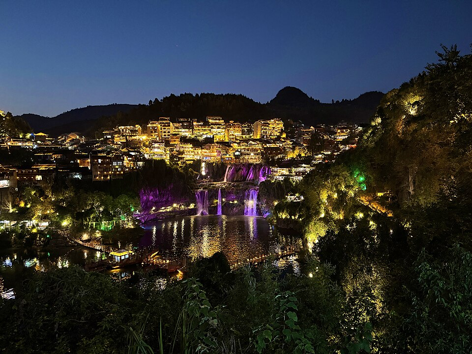
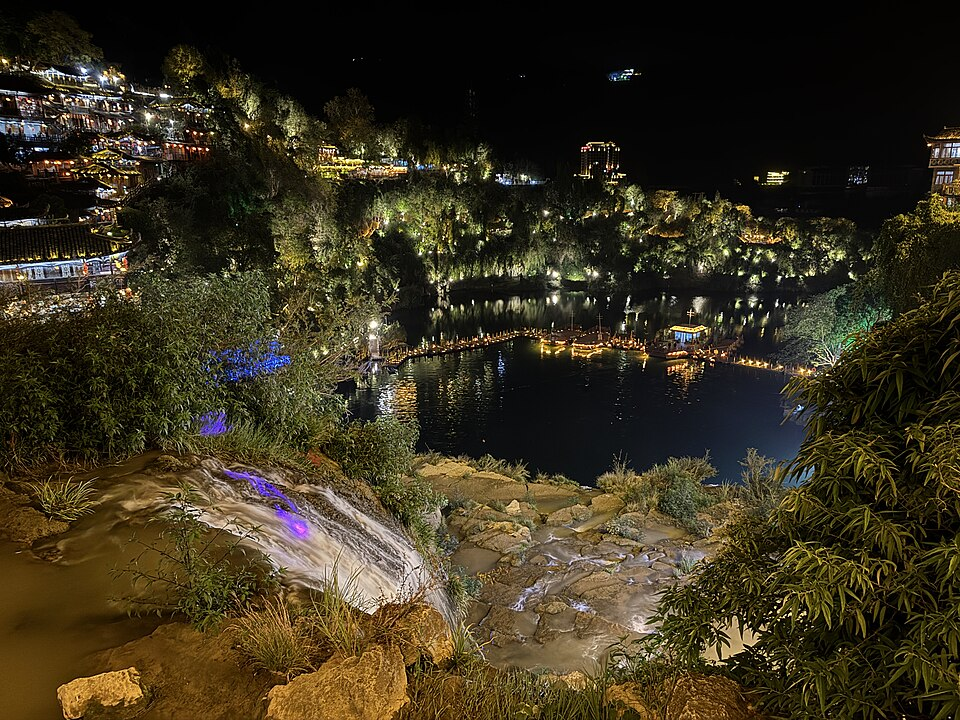
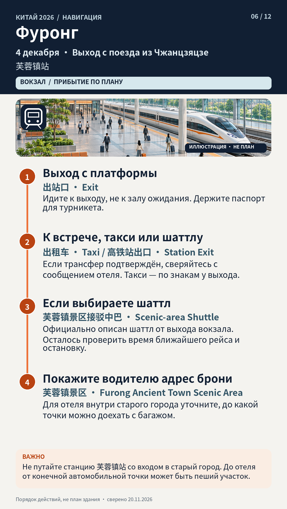
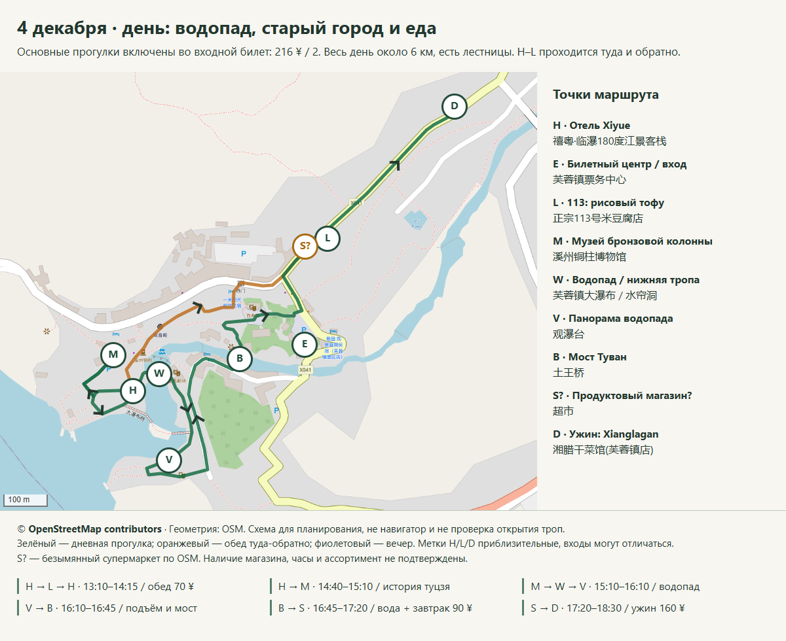
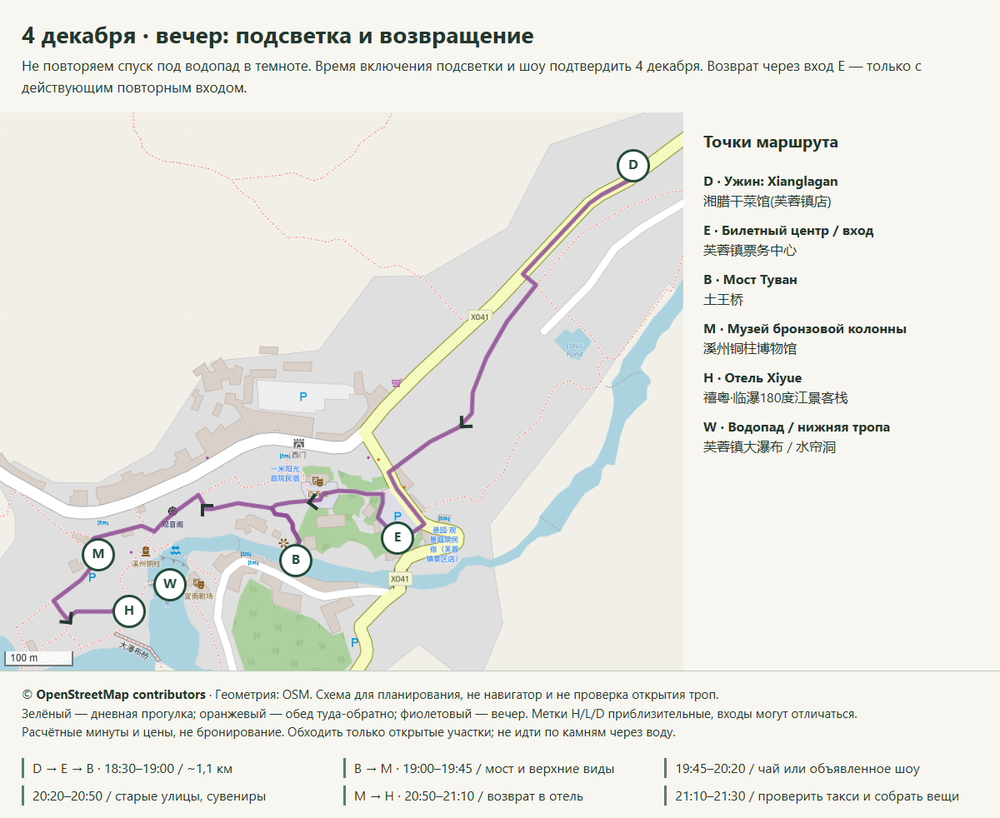
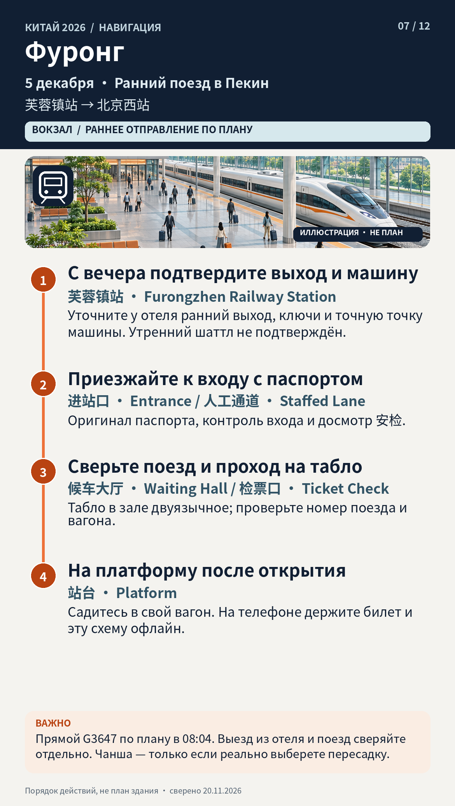
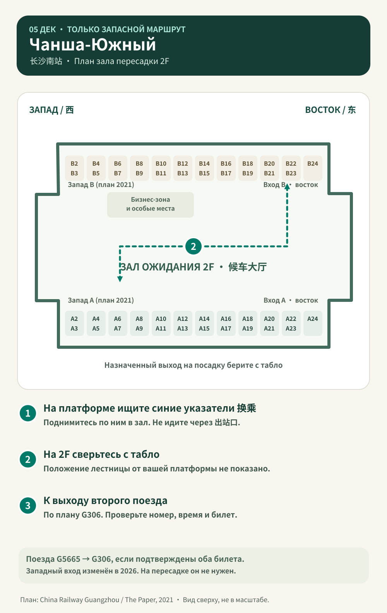
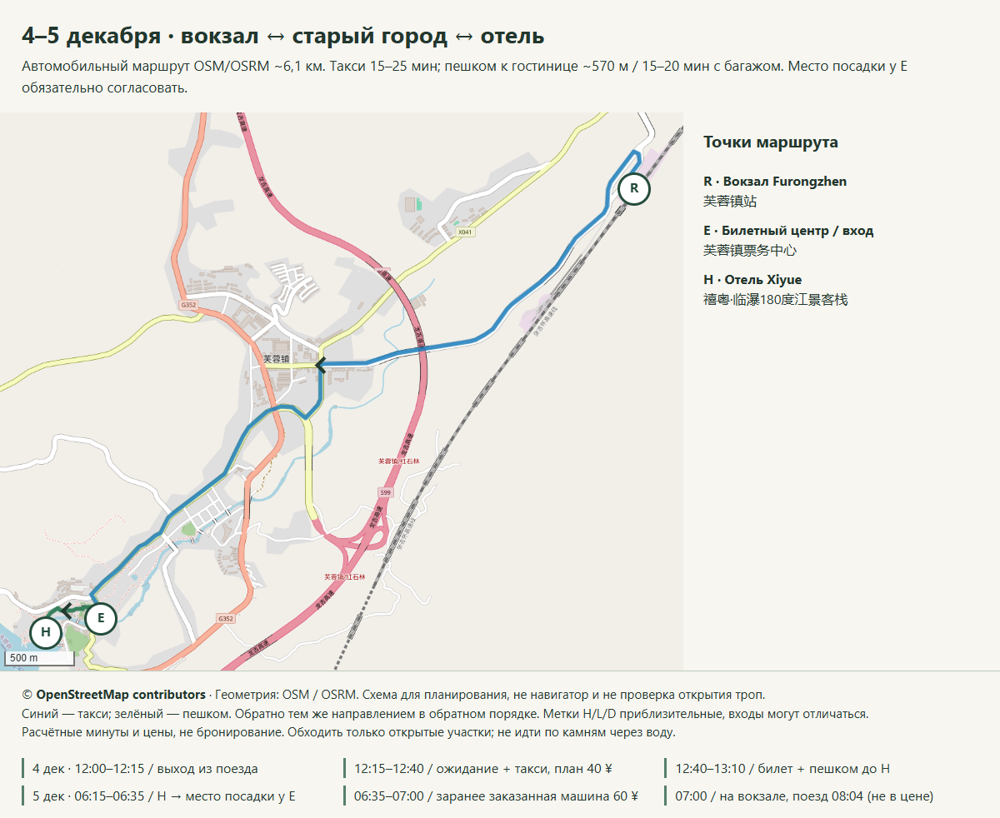

12:00–12:1515 мин
R · приехать и выйти с вокзала
Проверить, что станция именно 芙蓉镇站. Туалет, включить мобильный интернет, найти официальную стоянку. Багаж держать при себе.
0 ¥Китай · 4–5 декабря 2026 · 2 взрослых
Засветло — каскад, каменные улицы и дома туцзя. Вечером — хунаньская кухня и подсветка. Наутро — заранее заказанное такси к поезду в 08:04.



Фотографии архивные, масштаб воды и освещение в декабре могут отличаться. Использованы уменьшенные версии, отображаемые с кадрированием; права на фотографии — CC BY-SA 4.0. Карты и фото встроены: сохраняйте всю страницу для офлайн-доступа.
禧粤·临瀑180度江景客栈(芙蓉镇景区大瀑布店)
湖南省湘西土家族苗族自治州永顺县芙蓉镇河畔街26号
No. 26 Hepan Street, Furong Town, Yongshun · Открыть поиск в AMap ↗
Отель уже оплачен. В публичной карточке: заселение с 14:00, хранение багажа, киоск/минимаркет, стойка 09:00–24:00, завтрак не предоставляется. Если ваши условия брони отличаются, приоритет у брони. Проживание само по себе не подтверждает включённый входной билет или бесплатный трансфер.
Это историческая пешеходная зона с лестницами: в расчёте машина довозит до доступного подъезда у E, затем пешком. Метка H получена из карты Trip и приблизительна — не указатель конкретной двери. Номер с видом на водопад не следует из названия отеля: проверить категорию. Попросить показать дневной и ранний утренний выход.
Все часы — местное время Китая. Это предложенный график с запасами, не расписание заведений. День рассчитан на обычную ходьбу и лестницы; при дожде сокращаем нижнюю тропу.
Уровни подтверждены, полного плана нет. С платформы следуйте 出站口 (выход на нижнем уровне). Снаружи ищите шаттл 芙蓉镇景区接驳中巴 или согласованную точку такси. Устройство вокзала · Хунань · Транспорт до Фуронга.
Ниже: прежняя памятка по шагам. Это не план здания.
Выход с вокзала Furongzhen к согласованному трансферу, такси или автобусу.

Это схемы порядка действий с иллюстрациями, а не точные планы зданий. Номера выходов, платформы, терминалы и время сверяйте с выписанным билетом, табло и сотрудниками. Указанное на картинках расписание — план, а не подтверждение рейса или поезда.
726 ¥ на двоих за день, включая покупку завтрашнего завтрака, сувениры и кафе. Резерв учитывается отдельно. Карта прибытия: вокзал → вход → отель ↗

Проверить, что станция именно 芙蓉镇站. Туалет, включить мобильный интернет, найти официальную стоянку. Багаж держать при себе.
0 ¥Ехать примерно 15–25 минут; ожидание может увеличить время. Показать полное имя отеля и сообщить, что нужна встреча у доступного машине входа. Не обещаю подъезд к двери гостиницы.
40 ¥ / машинаОколо 10–15 минут на билеты и 15–20 минут на ~570 м с чемоданами. Паспорт каждого — под рукой. У отеля попросить камеру хранения; раннее заселение не гарантировано.
216 ¥ / 2 билетаПримерно 630 м по улицам, без чемоданов. Если устали или задержались — горячая лапша в ближайшем открытом кафе, тот же лимит; не тратить время на поиск конкретной вывески.
ПешкомПопробовать 米豆腐: рисовый тофу, не соевый. К нему взять горячую 牛肉粉 и, при наличии, 蒿叶粑粑. Просить без перца. В карточке средний чек 13 ¥/чел., но полноценный обед закладываю щедрее.
70 ¥ / 215 минут обратно, около 25 минут на номер, туалет и тёплые вещи. Заселение по карточке отеля с 14:00. Уточнить ранний выход, встречу с водителем и повторный вход в парк вечером.
Отель оплачен~225 м / 5–10 минут до района музея бронзовой колонны 溪州铜柱博物馆, 20 минут на осмотр. Входить, только если музей открыт и включён в ваш билет; иначе наружный осмотр и старая улица. Не покупать отдельную экскурсию автоматически.
Без доплаты в планеОколо 350 м по нанесённым дорожкам с лестницами. Следовать табличкам 大瀑布 / 水帘洞. Сначала спросить о проходе под струями и возможных перекрытиях.
Входной билетНижняя дорожка и 水帘洞 — только если официально открыты и не обледенели. Около 260 м к 观瀑台; 20–25 минут на фото всего каскада и домов. Не переходить реку по камням 跳岩. При закрытии — верхние виды, без попыток обойти ограждения.
Входной билет~540 м, на подъём оставить 20 минут, на мост и архитектуру — 15. Снимать линию крыш и изгиб улиц; не задерживаться на проходе. Это хороший момент осмотреть дома туцзя, а не только водопад.
Входной билет~520 м / 15 минут к торговым улицам; 20 минут на магазин. S? — точка супермаркета из OSM без названия: работу подтвердить у хозяина. Если закрыт, открытая продуктовая лавка по дороге или киоск H.
50 + 40 = 90 ¥ / 2Около 410 м к 湘腊干菜馆, 商合街258号. Ресторан вне плотного ядра у водопада: спокойный ранний ужин, затем возвращение за ночными кадрами. Повторный проход через контроль должен быть разрешён вашим билетом.
ПешкомНа двоих: копчёная свинина/говядина с овощами, зелень или баклажан, рис; суп вместо третьего большого блюда. Сначала посмотреть цены. Указанный средний чек 57 ¥/чел.; в плане 160 ¥ на заказ и напитки.
160 ¥ / 2~1,1 км с повторным входом. Паспорт и билет сохранить. Если условия входа не позволяют вернуться, ещё днём заменить D на кафе внутри: не платить за повторный вход вслепую.
Без новой оплаты входаВерхние улицы, подсвеченные дома, мост и виды в сторону водопада. ~440 м без спешки. Ночной режим камеры 1×, опора на перила, не загораживать проход. Время подсветки в декабре не подтверждено; это окно для просмотра, не расписание включения.
Входной билетВыбрать открытое кафе в старом городе с понятным меню, не платить отдельную «фотосессию» вместе с чаем. Если на табло есть включённое в билет выступление туцзя рядом и оно укладывается во время — заменить им кафе, а не добавлять ещё один блок.
До 60 ¥ / 2Небольшой текстиль с орнаментом 西兰卡普, открытка/магнит, чай с маркировкой. Сравнить 2–3 лавки. «Ручная работа» и «серебро» по вывеске не доказаны; дорогих покупок не планировать.
До 90 ¥ / 2До 21:10 вернуться, затем проверить будильник, паспорта, еду и подтверждение водителя. 21:30 — вы уже в отеле. Если устали, вернуться раньше: утром подъём в 05:45.
0 ¥
При задержке до часа: пообедать рядом с отелем, сократить музей и сувениры, сохранить водопад засветло. При сильном дожде/льду исключить W–V и нижнюю тропу; верхние виды и кафе безопаснее, но тоже только по открытым дорожкам.
Чтобы меньше ходить, не идти до D: выбрать открытое кафе в старом городе, показав хозяину лимит 160 ¥ на двоих. Конкретное запасное заведение заранее не подтверждено. Чай и сувениры необязательны: без них базовые расходы снижаются с 786 до 636 ¥, а общий лимит с тем же резервом — до 800 ¥ / 9 600 ₽. Самостоятельную прогулку на противоположный берег и Красный каменный лес не добавляю: они отнимут светлое время у водопада.
Уровни подтверждены, полного плана нет. Вход на верхнем уровне: 进站口. После досмотра ищите двуязычное табло у дверей 检票口; номер посадки сверяйте по своему поезду. Устройство вокзала · Хунань · Фото табло и дверей.
Ниже: прежняя памятка по шагам. Это не план здания.
Ранний выезд, проверка паспорта и досмотр перед поездом из Furongzhen.

Это схемы порядка действий с иллюстрациями, а не точные планы зданий. Номера выходов, платформы, терминалы и время сверяйте с выписанным билетом, табло и сотрудниками. Указанное на картинках расписание — план, а не подтверждение рейса или поезда.

Пересадка без выхода: с платформы идите по синим указателям 便捷换乘 вверх в зал 2F. С багажом можно воспользоваться лифтом в южном конце платформы. Ворота следующего поезда проверьте на табло. Инструкция железной дороги.
Ниже: прежняя памятка по шагам. Это не план здания.
В основной план входит прямой поезд. Эта схема нужна только при покупке другого маршрута с пересадкой в Чанша-Южная.

Это схемы порядка действий с иллюстрациями, а не точные планы зданий. Номера выходов, платформы, терминалы и время сверяйте с выписанным билетом, табло и сотрудниками. Указанное на картинках расписание — план, а не подтверждение рейса или поезда.

Съесть купленный вечером завтрак, забрать багаж, оставить ключ согласованным способом. Обычная стойка по карточке начинает работу в 09:00: не рассчитывать на сотрудника без договорённости.
Завтрак уже учтён 04.12Около 570 м, темно и возможны скользкие ступени. Точный открытый выход проверить накануне. Водитель должен знать место встречи; при другом въезде сдвинуть выход раньше.
ПешкомВыезд не позже 06:35. Расчёт 15–25 минут, 60 ¥ за машину; подтвердить цену вечером. Если к 06:25 водитель не подтверждает подачу — сразу звонок хозяину/резервному перевозчику.
60 ¥ / машинаЦель — вокзал около 07:00, запас на проверку паспортов иностранцев и багаж. Искать ручной проход при необходимости, следить за табло и началом посадки. 08:04 — отправление по вашим данным; сверить билет.
Поезд исключёнРасход дня: 60 ¥ / 720 ₽ на двоих. Завтрак уже куплен и посчитан 4 декабря. Поезд до Пекина и расходы в пути здесь не считаются.
正宗113号米豆腐店, Shiban Street. Карточка ресторана · Открыть поиск в AMap ↗
米豆腐 — мягкая рисовая закуска с соусом; не заменяет сытный обед. Взять горячую рисовую лапшу и попробовать лепёшку 蒿叶粑粑, если есть. «Лю Сяоцин» на вывесках — отсылка к фильму, не гарантия владельца или уникальности магазина.
70 ¥ / 2 — лимит, не подтверждённая цена набора. Если L закрыт, искать вывески 米粉 / 面馆 рядом, не ехать в другой конец города.
湘腊干菜馆(芙蓉镇店), 商合街258号. Карточка ресторана · Открыть поиск в AMap ↗
Выбор ради кухни Хунани: 腊牛肉 / 腊肉 — копчёное мясо, овощи, рис. На двоих обычно достаточно 2–3 блюд. Ресторан выбран с адресом и карточкой меню, а не как гарантированный «лучший». Переход обратно до моста около 1,1 км.
160 ¥ / 2. Рыбу на вес брать только после согласования общего веса и цены; не считать цену за 斤 ценой всей рыбы.
Продуктовая точка у торговых улиц нанесена в OSM, но без названия. Посмотреть запись · Открыть поиск в AMap ↗
План покупки: вода, бананы/мандарины, орехи/печенье 50 ¥; хлеб/булочки в упаковке, молоко длительного хранения или соевый напиток 40 ¥ на утро. Не брать скоропортящиеся готовые блюда без холодильника.
Проверить запас до ухода из магазина. Если S закрыт — другая открытая лавка по той же улице или киоск отеля; ассортимент киоска не подтверждён. Покупки распределить по небольшим рюкзакам.
V днём: водопад целиком и дома на уступе, объектив 1×/0,5×, протереть линзу от брызг. W: только с оборудованной открытой тропы, телефон защитить от воды. B вечером: мост, крыши, фонари; не спускаться к воде ради кадра.
M и старые улицы: резные детали, вывески и фактура камня. Людей фотографировать с согласия. Платные террасы могут требовать заказ: сначала спросить, чай уже имеет лимит 60 ¥. Вода в декабре может быть менее полноводной, чем на фото.
我们两个人。不要辣，不要辣椒。不要内脏。请先告诉我总价。
Нас двое. Не остро, без перца, без субпродуктов. Сначала скажите общую цену.
Фольклор: на входе сфотографировать афишу выступлений «花开芙蓉·毕兹卡的狂欢» / 摆手舞 и уточнить включение в билет. Я не назначаю выдуманный зимний сеанс. Подходящее выступление заменяет блок кафе/покупок, с выходом к отелю не позже 21:00. Если его нет — вечерний маршрут остаётся полноценным. Аренда костюмов, фотограф и отдельные платные шоу не включены.
我们两个人12月4日12:00到芙蓉镇站，带行李。请确认出租车在哪里下车，能否到下车点接我们。房费是否包含景区门票？外国护照怎么买票？当天出景区吃饭后能否再次入园？12月5日我们坐08:04的火车，需要06:15离开客栈，06:35上车，07:00左右到芙蓉镇站。请确认早上哪个出口开放、如何提前退房，并帮忙预订车辆、确认总价。我们需要前一天买好早餐。谢谢！
Текст для вашего сообщения, я его не отправлял. Попросить подтвердить время, вход, цену машины и ранний выход, а не только ответить «可以».
Водителю на выезд: 芙蓉镇站（高铁站）
我们需要早上七点左右到达芙蓉镇站。请确认总价。
Нам нужно быть на железнодорожном вокзале Фуронг около 07:00. Подтвердите общую цену.
Расходы на двоих; такси — за машину, билеты — за двух взрослых. Отель, уже оплаченные траты и все междугородние поезда исключены. Курс 1 ¥ = 12 ₽ — тот же условный курс планирования, не котировка банка.
| Дата | Статья | Расчёт, ¥ | На двоих |
|---|---|---|---|
| 04.12 | Такси вокзал → входЗа машину на двоих; оценка 30–50, согласовать | 1 × 40 | 40 ¥480 ₽ |
| 04.12 | Вход в ФуронгОпубликованный базовый ориентир; не бронь на 4 декабря | 2 × 108 | 216 ¥2,592 ₽ |
| 04.12 | Обед: рисовый тофу и горячееЛимит на двоих, не меню ресторана | 1 × 70 | 70 ¥840 ₽ |
| 04.12 | Ужин: хунаньская кухняЛимит на двоих, 2–3 блюда + рис | 1 × 160 | 160 ¥1,920 ₽ |
| 04.12 | Вечерний чай / кафеНеобязательно; не отдельный входной билет | 1 × 60 | 60 ¥720 ₽ |
| 04.12 | Вода и перекусы на прогулкуПокупка на двоих | 1 × 50 | 50 ¥600 ₽ |
| 04.12 | Купить завтрак на 5 декабряПлатим вечером; утром второй раз не считаем | 1 × 40 | 40 ¥480 ₽ |
| 04.12 | Небольшие сувенирыНеобязательный лимит | 1 × 90 | 90 ¥1,080 ₽ |
| 05.12 | Раннее такси вход → вокзалЗа заранее заказанную машину; оценка 40–80 | 1 × 60 | 60 ¥720 ₽ |
4 декабря: 726 ¥ / 8 712 ₽. 5 декабря: 60 ¥ / 720 ₽.
Итого план: 786 ¥ / 9 432 ₽ + резерв 164 ¥ / 1 968 ₽.
Лимит: 950 ¥ ≈ 11 400 ₽
Резерв — на дороже стоящее раннее такси, изменение тарифов, комиссии и мелкие принадлежности; не на автоматическое добавление всех платных услуг. В том числе держать доступными хотя бы 100 ¥ на непредвиденную логистику. Наличные — часть этого бюджета, не дополнительный расход.
950 ¥ ≈ 11 400 ₽
Калькулятор меняет только эту строку. Текст и CSV остаются при исходном курсе 12. Без JavaScript итог выше доступен.
Проверено 5 октября 2026. Еда и такси — лимиты/оценки, не забронированные услуги. Время — план; доступ к тропам, работа магазина, билеты на декабрь, подсветка и ранний выход требуют повторной проверки. На карте линии идут по доступной геометрии OSM, но это не доказательство открытого прохода. Не отмечаю непроверенную лесную или речную «короткую дорогу».